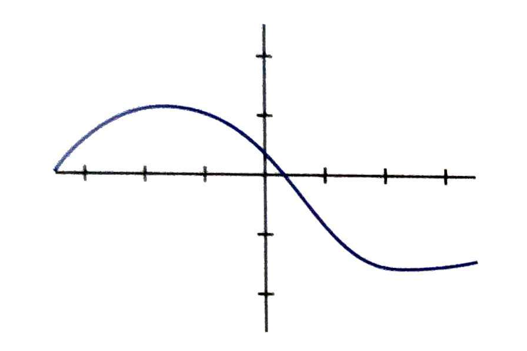
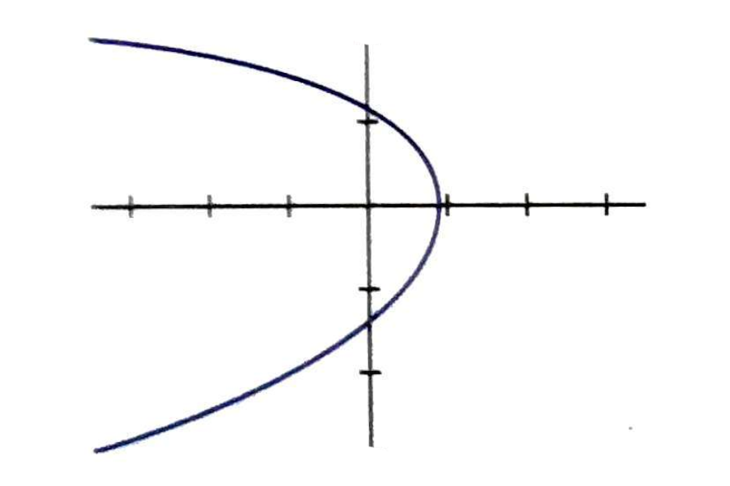

Tema 5
Funciones
Concepto de función
Una función es un objeto matemático que se utiliza para expresar la dependencia entre dos magnitudes de forma que a cada valor de una de ellas se le asigna uno y solo uno de la otra.
- Variable independiente: \[x\]
- Variable dependiente: \[y = f(x)\]


Formas de definir una función
- Enunciado o regla
- Tabla de valores
- Gráfica
- Expresión algebraica
Gráfica
Representamos los vares de valores (x, f(x)) para cada valor posible de x.
1Indica cual de las siguientes gráficas no corresponde con una función:
- 
- 
Expresión algebraica
Ejemplo: Utilizamos la notación \[f(x)=x^2\] para especificar a la función que a cada número x le hace corresponder su cuadrado \[x^2\]. Por lo tanto \[f(2) = 4\]; \[f(3) = 9\].
2Indica el valor de f(3) para cada caso:
- \[ f(x) = 3x + 2 \]
- \[ f(x) = x^2 \]
- \[ f(x) = \sqrt{x + 1} \]
Características de las funciones
Dominio de definición
Llamaremos dominio de una función \[f\] al conjunto de valores para los que esa función queda perfectamente definida.
\[Dom~f\]
Imagen
Se llama imagen o recorrido de una función a todos los valores de la variable dependiente que tienen algún valor de la variable independiente que se transforma en él por la función.
\[Im~f\]
Puntos de corte con los ejes
Los puntos de corte con los ejes de una función \[f\] son los puntos de intersección de la gráfica de la función con cada uno de los ejes de coordenadas.
Continuidad
Tipos de discontinuidades
- Evitable
- De salto finito
- De salto infinito
Crecimiento / Decrecimiento
Máximos / Mínimos
Periodicidad
Una función es periódica si su gráfica se va repitiendo cada cierto intervalo.
Simetrías
Una función simétrica es una función en la que se puede encontrar un eje de simetría en su representación gráfica.
- Simetría par
- Simetría impar
3Describe las características de las funciones en función de los parámetros vistos en clase:
FICHA
Análisis del Dominio
Buscaremos los "problemas" que puedan tener las expresiones.
Análisis de los Puntos de corte
- Eje x: Resolceremos la ecuación \[f(x) = 0\]
- Eje y: Calcularemos f(0)
4Calcula el dominio y los puntos de corte con los ejes de las siguientes funciones:
- \[f(x) = x^2 + 3x\]
- \[g(x) = \sqrt{x^2 - 5x + 4} \]
- \[t(x) = \frac{x^2- 3}{x - 6}\]
- \[s(x) = \frac{\sqrt{2x-3}}{x-10}\]
Funciones elementales
-
Algebraicas:
- Polinómicas
- Racionales
- Radicales
-
Transcendentes:
- Exponenciales
- Logarítmicas
- Trigonométricas
- Definidas a trozos
Polinómicas: Función constante
\[f(x) = c\]
Polinómicas: Función lineal
\[ f(x) = mx + n \]
Polinómicas: Función lineal
- Es una recta
- \[m\]: Pendiente.
- \[n\]: Ordenada en el origen
Polinómicas: Función lineal
Para representar calculamos dos puntos.
Polinómicas: Función cuadrática
\[ f(x) = ax^2 + bx + c \]
Polinómicas: Función cuadrática
- Es una parábola
- Signo de \[a\]:
- Positivo: Ramas hacia arriba.
- Negativo: Ramas hacia abajo.
- Vértice en \[x=\frac{-b}{a}\].
- Simétrica par con respecto a una recta vertical partiendo de vértice.
Polinómicas: Función cuadrática
Para representar calculamos vértice, puntos de corte y puntos de la función teniendo en cuenta la simetría.
5Representa las siguientes funciones polinómicas:
- \[f(x) = 3x\]
- \[f(x) = -2x + 3\]
- \[f(x) = x^2 - 3x\]
- \[f(x) = 2\]
- \[f(x) = -2x^2 +10x + 12\]
- \[f(x) = x - 4\]
Función racional
\[ f(x) = \frac{k}{x} \]
Función racional
Ver GeogebraFunción radical
\[ f(x) = \sqrt{x} \]
Función radical
Ver GeogebraFunción Exponencial
\[ f(x) = a^x \]
Función Exponencial
Ver GeogebraFunción Logarítmica
\[ f(x) = log_a(x) \]
Función Logarítmica
Ver GeogebraFunción definida a trozos
Operaciones con funciones
Suma, resta producto y cociente
Composición de funciones
Dadas las funciones \[f(x) = ...\] , \[g(x) = ...\] y \[s(x) = ...\] calcula:
Función inversa
Cálculo de la función inversa
Calcula la inversa de las siguientes funciones: